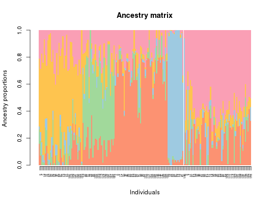

Get the Q ancestry coefficient matrix computed by the tess3 function.
qmatrix(tess3, K, rep = "best")
a Q matrix of ancestry coefficients from a specified run.
library(tess3r) # load Arabidopsis data data(data.at) # Running tess3 obj <- tess3(data.at$X, coord = data.at$coord, K = 5, ploidy = 1, method = "projected.ls", openMP.core.num = 4)#> == Computing spectral decomposition of graph laplacian matrix: done #> ==Main loop with 4 threads: done #># Get the ancestry matrix Q.matrix <- qmatrix(obj, K = 5) # Plot the barplot barplot(Q.matrix, border = NA, space = 0, xlab = "Individuals", ylab = "Ancestry proportions", main = "Ancestry matrix") -> bp#> Use CreatePalette() to define color palettes. #>axis(1, at = 1:nrow(Q.matrix), labels = bp$order, las = 3, cex.axis = .4)